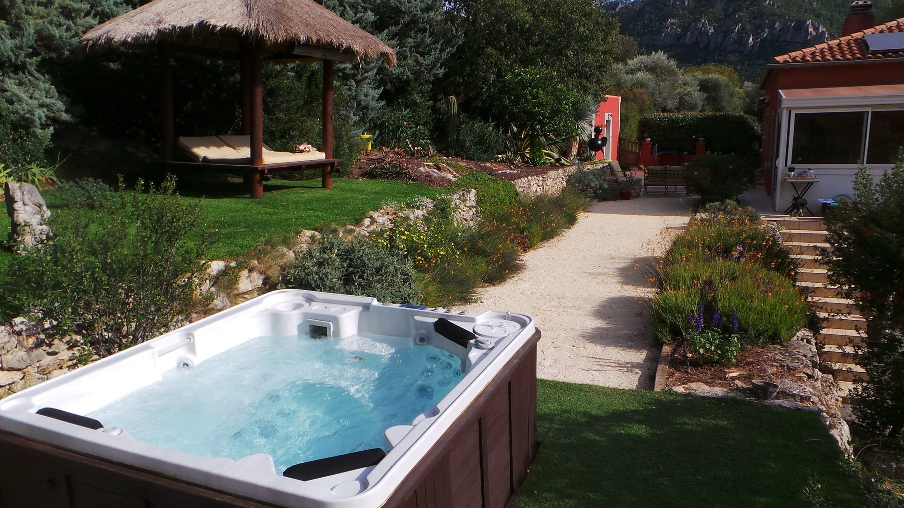
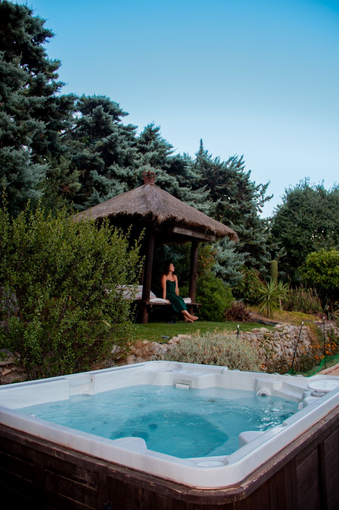
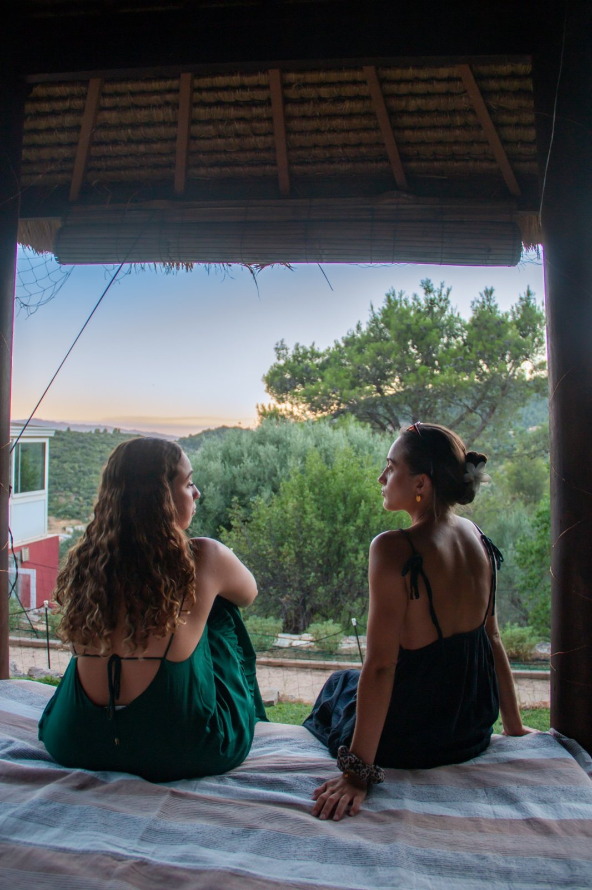
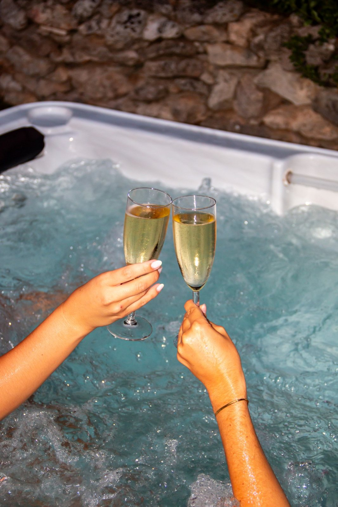
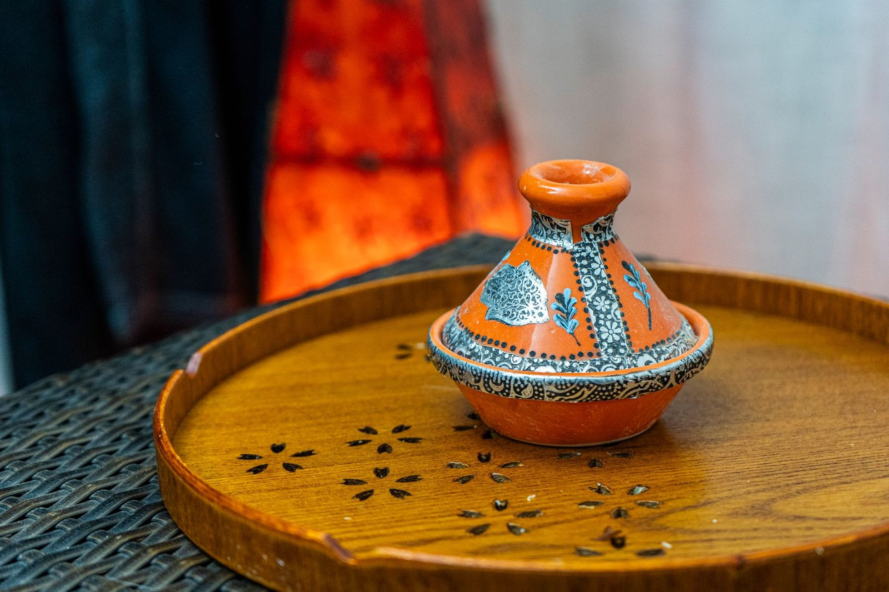
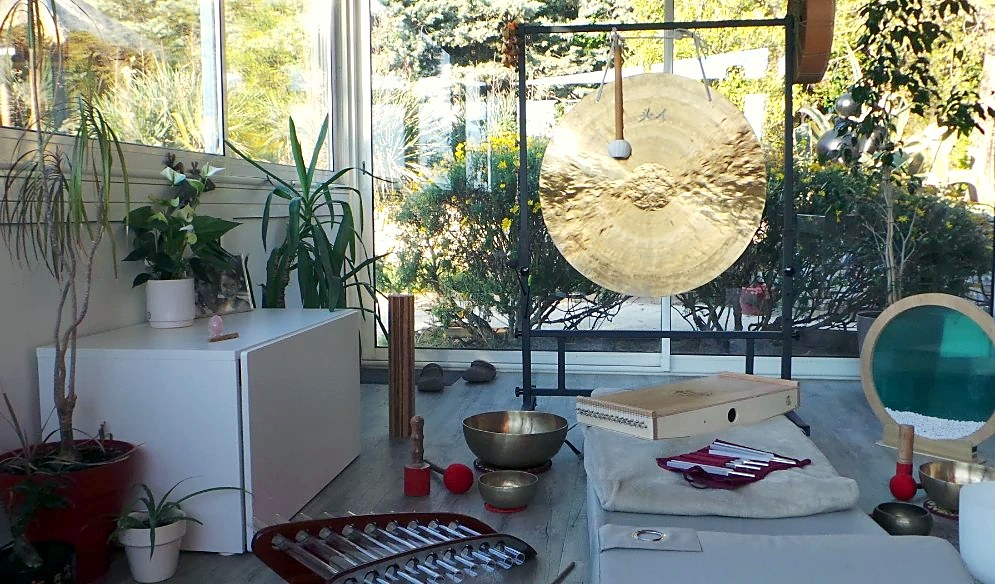
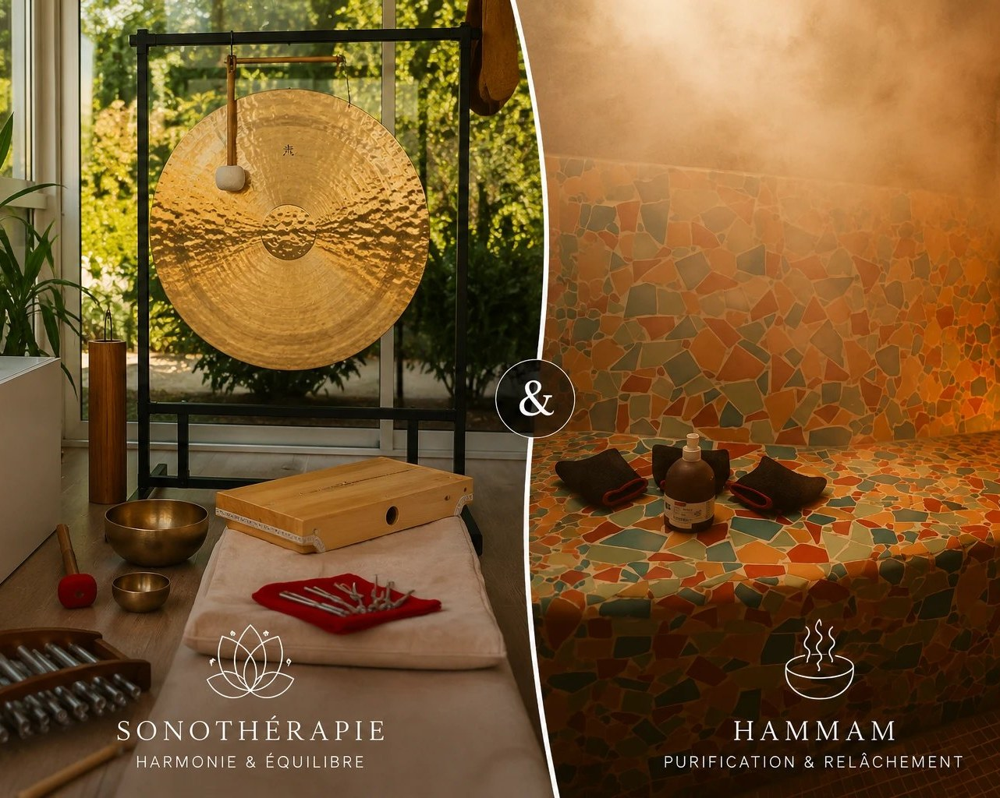
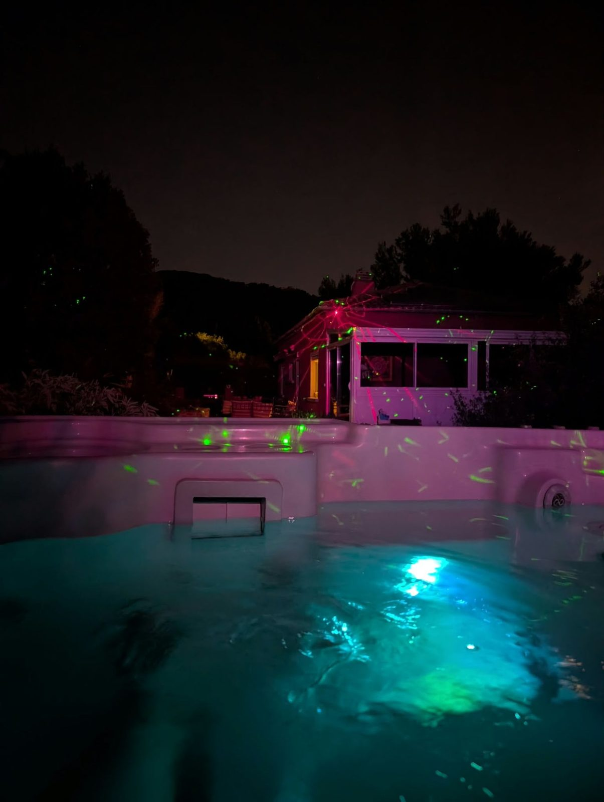
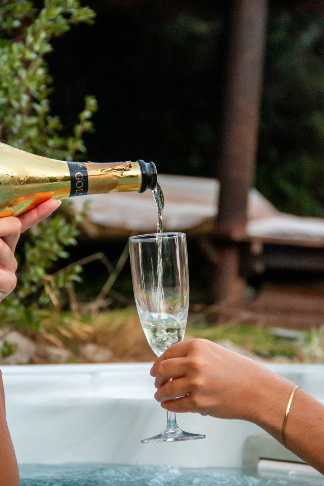
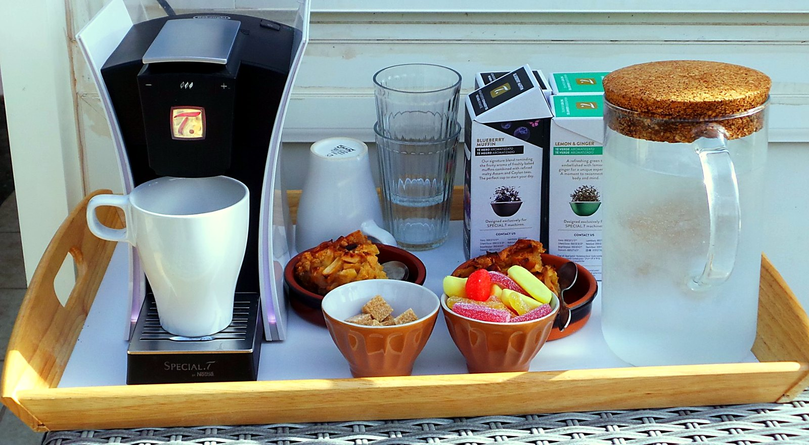

Spa privatisé :
jacuzzi, hammam
& sonothérapie
Spa 100 %
privatisé
privatisé
Vue sur
le mont Faron
le mont Faron
25 € / pers.
à 4
à 4
Le Revest-
les-Eaux
les-Eaux
Un jacuzzi et un hammam rien que pour vous, face au mont Faron. Offrez-vous une vraie journée spa dans le Var : 2 h de jacuzzi dès 100 € jusqu’à 4 personnes, collation comprise.
★★★★★ 5/5 · 11 avis Google · Le Revest-les-Eaux
Pour qui ?
Un moment pour chaque envie
Moment à deux
Pour vous retrouver loin du quotidien.
Cadeau
Une expérience plutôt qu'un objet.
Entre amies & EVJF
Une occasion pour se retrouver et célébrer.
Besoin de souffler
Une vraie pause, loin du stress.


Nos expériences
Jacuzzi, hammam ou sonothérapie :
Jacuzzi, hammam ou sonothérapie :
quelle expérience pour vous ?



Avis Google 5 étoiles
Ils ont adoré leur moment
★★★★★« La Villa 144 est devenue mon nouveau coup de cœur bien-être ! Le concept du spa nocturne est tellement original et relaxant. Nous avons profité d'un moment hors du temps, dans un cadre chaleureux et très élégant. Le spa privatif est idéal pour se détendre en fin de journée, surtout avec la vue incroyable sur le mont Faron et la petite collation ! Une expérience unique à vivre absolument près de Toulon. »— Fabienne L., avis Google
★★★★★« Nous avons passé, avec mon amie, deux heures de pur bonheur dans cet endroit très agréable, offrant une vue tout simplement à couper le souffle. Le jacuzzi est incroyable et l'accueil est d'une qualité exceptionnelle. Merci pour ce moment hors du temps ! »— Thomas C., avis Google
★★★★★« Très belle expérience. Nous avons été très bien reçu et tout a été parfait du début à la fin. Endroit calme pas très loin et dépaysant je recommande les yeux fermés. »— Christophe S., avis Google

Du 15 juin au 15 septembre
Spa nocturne
À la nuit tombée, tout le jardin s'illumine : guirlandes, jeux de lumières colorées dans les arbres et sur la montagne, jacuzzi aux reflets changeants. Une atmosphère envoûtante, rien que pour vous.
Collation comprise
DécouvrirUne collation offerte
Chaque moment au spa ou au hammam se prolonge avec une collation préparée avec soin, comprise dans le prix :
- Avec le jacuzzi : un verre de vin ou une boisson chaude, une pâtisserie et des fruits frais
- Avec le hammam : un thé ou une infusion, une pâtisserie et des fruits secs
Une autre boisson vous ferait plaisir ? Précisez-le simplement lors de la réservation.
L'abus d'alcool est dangereux pour la santé, à consommer avec modération.


Votre hôte
Aline, créatrice
Aline, créatrice
de Villa 144
Praticienne en sonothérapie, j'ai créé Villa 144 comme un refuge au calme, face au mont Faron. Ici, tout est pensé pour que vous puissiez vous poser : un jardin préservé, un spa rien que pour vous, et des voyages sonores pour relâcher le corps et l'esprit.
Avis Google 5 étoiles
Ils ont aimé leur parenthèse
★★★★★« Nous avons découvert Villa 144 et avons commencé par profiter du spa nocturne. Le cadre est magnifique, avec une vue superbe. […] J'ai ensuite participé à une séance de sonothérapie et ce fut une très belle découverte. Les sons et les vibrations procurent une profonde relaxation et permettent de relâcher les tensions accumulées. On ressort apaisé, détendu et véritablement ressourcé. »— Céline C., avis Google
★★★★★« Une très belle découverte ! Tout était parfait : l'accueil, la propreté, le cadre et les équipements. Un vrai moment de détente et de bien-être. Nous reviendrons avec grand plaisir ! »— Jérôme W., avis Google
★★★★★« En vacances dans le Var, nous avons trouvé cette activité originale près de Toulon. Le cadre est reposant, avec une vue superbe. Le coucher de soleil sur la montagne magnifique. Une très bonne soirée détente. »— Laure M., avis Google
Infos pratiques
Avant de venir
Accès et parking
101A Chemin des Institutrices, Le Revest-les-Eaux. Parking dans le domaine.
Espace dédié
Un endroit pour se changer, une douche et des WC.
À apporter
Votre maillot de bain, une serviette et des tongs.
Chauffé toute l'année
Une eau à 37-38 °C, été comme hiver, traitée au brome.
Collation comprise
Servie pendant votre moment.
En cas de pluie
On reporte, ou on bascule le spa sur le hammam.
Annulation
Remboursée jusqu'à 48 h avant votre rendez-vous.
Réservation
Sur Resalib, par Wero ou espèces sur place. Validée après confirmation.
Questions fréquentes
Où trouver un spa privatif dans le Var ?
Villa 144 propose un spa privatisé au Revest-les-Eaux (83200), à environ 15 minutes du centre de Toulon, avec vue sur le mont Faron. Le jacuzzi extérieur et le hammam sont réservés à votre groupe uniquement, jusqu'à 4 personnes.
Où faire une journée spa dans le Var ?
Villa 144, au Revest-les-Eaux, propose une journée spa privatisée à 15 minutes de Toulon : 2 heures de jacuzzi extérieur (100 € pour le groupe), 1 heure de hammam (60 €) ou une formule avec sonothérapie (70 € à 90 €), collation comprise. L'espace est réservé à votre groupe, jusqu'à 4 personnes.
Combien coûte le spa privatif à Villa 144 ?
Le jacuzzi extérieur privatisé coûte 100 € pour 2 heures et pour le groupe (jusqu'à 4 personnes), collation comprise. Le hammam privatisé coûte 60 € pour 1 heure, jusqu'à 4 personnes, collation comprise.
Comment se déroule une séance de sonothérapie ?
La séance dure 1 heure et se fait en individuel. Vous restez habillé, confortablement allongé. Aline repère les chakras en déséquilibre, puis les harmonise par le son : des fréquences cristallines et aiguës pour les chakras du haut, des sons graves et profonds pour les chakras du bas. Tarif : 60 €.
Qu'est-ce qu'une harmonisation sonore des chakras ?
C'est un soin énergétique par le son. Les centres énergétiques (chakras) qui semblent en déséquilibre sont repérés, puis rééquilibrés avec les fréquences qui leur correspondent : sons aigus de la harpe de cristal, du bol en cristal et des carillons Koshi pour le haut du corps, sons graves du gong, des tambours et des bols tibétains pour le bas. Une pratique de bien-être, qui ne remplace pas un avis médical.
Quelle différence entre voyage sonore et harmonisation sonore ?
Le voyage sonore (30 minutes, dans la formule combinée d'une heure) est une immersion dans les sons : vous vous allongez et vous vous laissez porter. L'harmonisation sonore (1 heure, en séance seule ou dans la formule combinée de 2 heures) est un soin sur mesure : après un échange, Aline repère les chakras en déséquilibre, puis les rééquilibre avec les fréquences adaptées.
Peut-on combiner sonothérapie et spa ?
Oui. Les formules Sonothérapie & Spa et Sonothérapie & Hammam existent en deux durées. Formule d'une heure (70 €) : 30 minutes de voyage sonore, puis 30 minutes de jacuzzi ou de hammam. Formule de deux heures (90 €) : une heure d'harmonisation sonore, puis une heure de jacuzzi ou de hammam.
Le spa est-il ouvert le soir ?
Oui, du 15 juin au 15 septembre, Villa 144 propose un spa nocturne : 2 heures de jacuzzi privatisé illuminé à la tombée de la nuit, jusqu'à 4 personnes, 100 € le groupe, collation comprise.